Financial Markets: Part III
BUSS254 Investments
Lecture Outline
- Money markets: Call, Repo, CD, CP, etc.
- Capital markets: Bond, Equity
- Derivatives markets: Futures, options etc.
- Trading mechanisms
- Investment Companies
- Reading: BKM Ch. 3 and 4
Trading Mechanics
Why Trade?
- Information-driven trading: Traders act on private or public information.
- Non-information-driven trading:
- Hedging: Reducing risk exposure.
- Liquidity needs: Buying or selling for cash flow reasons.
- Noise trading: Trading without fundamental justification, often irrational or random.
Types of Orders
- Market order: Executes immediately at the best available price.
- Quick execution vs. Price uncertainty.
- Limit order: Specifies price and waits for execution at that price or better.
- Price control vs. Execution uncertainty.
- Stop order: Becomes a market order once the stop price is triggered.
- Stop-loss: Sells when the price falls below a set level.
- Stop-buy: Buys when the price rises above a set level.
- Short selling: Selling borrowed shares to profit from a price decline.
- Margin trading: Borrowing funds to amplify trading positions, increasing both potential gains and risks.
Margin Trading
- Margin Purchase = Borrowing + Investor’s Equity
- Initial Margin: Minimum equity required to open a position.
- Maintenance Margin: Minimum equity required to keep the position open.
- Margin Call: If the value of securities falls too much, the investor must:
- Deposit more equity (\(\ge\) initial margin), or
- Liquidate the position.
Margin Trading: Example
- Stock Price: $100 per share
- Shares Purchased: 100
- Initial Margin: 60%
- Maintenance Margin: 30%
Initial Position:
| Asset | Value | Liability | Equity |
|---|---|---|---|
| Stock | $10,000 | Borrowed | $4,000 |
| Investor Equity | $6,000 |
If Stock Price Falls to $70:
| Asset | Value | Liability | Equity |
|---|---|---|---|
| Stock | $7,000 | Borrowed | $4,000 |
| Investor Equity | $3,000 |
- Margin% = Equity / Market Value = \(\frac{\$3,000}{\$7,000} = 43\%\)
- Since 43% > 30% (maintenance margin), no margin call.
Margin Trading: Maintenance Margin
How far can the stock price fall before a margin call?
Maintenance Margin = 30%
Formula for Equity: \(\text{Equity} = \text{Market Value} - \text{Borrowed Amount} = 100P - 4,000\)
Margin% Formula: \(\frac{100P - 4,000}{100P} = 0.30\)
Solving for Price:
\[100P - 4,000 = 30P\] \[70P = 4,000\] \[P = 57.14\]
Short Sales
Selling securities that you do not own to profit from a decline in the price of the securities
- Borrow securities through a dealer or broker.
- Sell them and deposit the proceeds along with the margin in an account.
- You cannot withdraw the proceeds until you “cover” the position.
- Closing out the position: Buy back the securities and return them to the lender.
Naked short-selling:
- Selling shares without borrowing them first, assuming they can be acquired later.
- Illegal due to the risk of delivery failure.
Short Sales: Example
- Stock X: 1000 shares
- Initial Price: $100 per share
- Initial Margin: 50%
- Maintenance Margin: 30%
Position Setup:
| Item | Value |
|---|---|
| Sale Proceeds | $100,000 |
| Initial Margin | $50,000 |
| Stock Owed | 1000 shares |
Balance Sheet:
| Assets | Liabilities |
|---|---|
| $100,000 (sale proceeds) | $100,000 (shares owed) |
| $50,000 (initial margin) | |
| Equity | |
| $50,000 |
Short Sales: Example (cont’d)
- If Price Falls to $70 per share:
| Assets | Liabilities |
|---|---|
| $100,000 (sales proceeds) | $70,000 (shares) |
| $50,000 (initial margin) | |
| Equity | |
| $80,000 |
- Profit Calculation:
\[\text{Profit} = \text{Ending Equity} - \text{Beginning Equity}\]
\[= \$80,000 - \$50,000 = \$30,000\]
\[= (\text{Initial Price} - \text{New Price}) \times \text{Shares Sold Short}\]
\[= (100 - 70) \times 1000 = \$30,000\]
Short Sales: Example (cont’d)
- Maximum Stock Price Before Margin Call:
- Formula:
\[\text{Margin%} = \frac{\text{Assets} - \text{Liabilities}}{\text{Market Value}}\]
\[= \frac{(\$150,000 - 1000P)}{1000P} = 0.30\]
- Solving for P:
\[150,000 - 1000P = 0.30 \times 1000P\]
\[150,000 = 1300P\]
\[P = 115.38\]
- \(150,000\): Initial margin plus sale proceeds
Trading Mechanisms
Auction Market
- Centralized: Investors interact directly.
- Orders are consolidated in a limit order book (LOB):
- Bid (buy) and ask (sell) orders.
- Order-driven market: Limit orders determine prices.
- Examples: NYSE, Paris, Milan, Tokyo, Korea.
Dearler Market
- Decentralized: Trades occur via dealers.
- Dealers quote bid-ask prices, taking on inventory risk.
- Quote-driven market: Dealers set prices.
- Examples: Nasdaq, bond markets, forex markets.
Auction Market
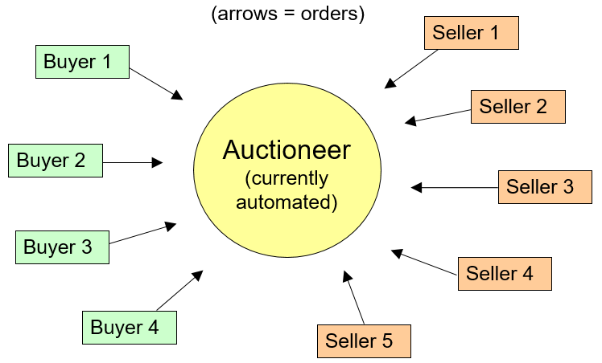
- Call (Batch) Auction: Orders are grouped and executed at specific times.
- Typically at market open and close.
- Helps reduce price distortions from temporary order imbalances.
- Continuous Auction: Trading happens continuously throughout the day.
Call Auction
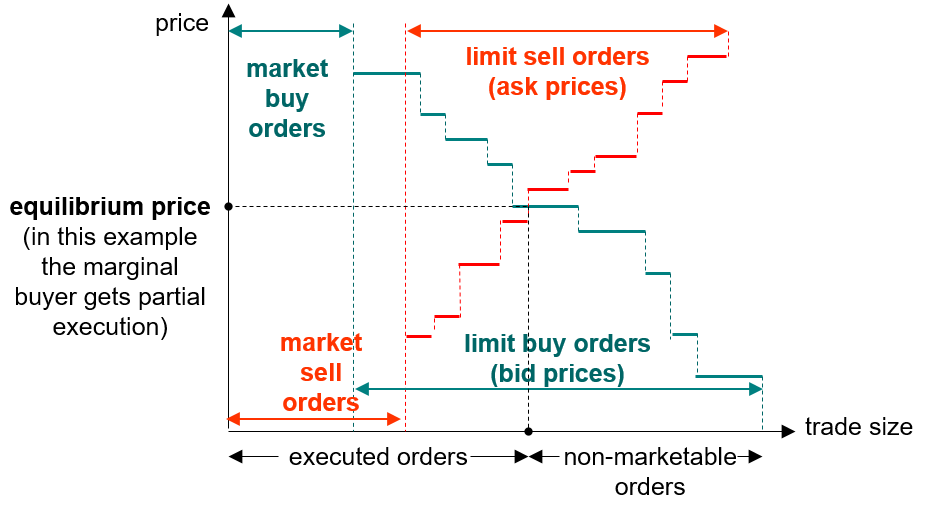
Buy orders sorted by decreasing price (demand), and sell orders by increasing price (supply).
Call Auction (cont’d)
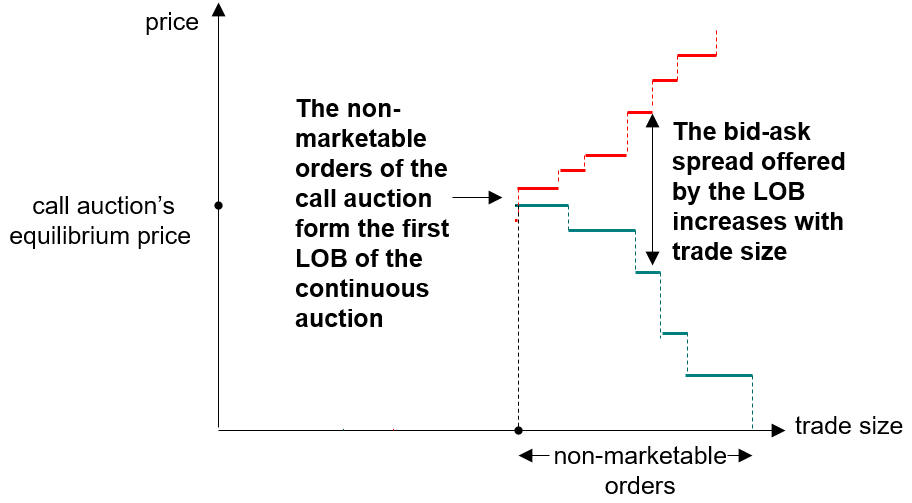
Price set so that supply = demand. All executable orders are filled at that price
Continuous Auction: Limit Order Book
- Non-marketable orders (those not executed in the call auction) enter the Limit Order Book (LOB).
- Incoming orders execute against the LOB based on:
- Price priority: Best prices executed first.
- Time priority: Older orders executed before newer ones at the same price.
| Bid | Ask | ||||
|---|---|---|---|---|---|
| Price | Size | Time | Price | Size | Time |
| 74.42 | 300 | 11:49:39 | 74.48 | 300 | 11:49:35 |
| 74.41 | 100 | 11:46:55 | 74.48 | 500 | 11:49:50 |
| 74.36 | 400 | 11:48:30 | 75.74 | 100 | 08:25:17 |
| 74.36 | 400 | 11:48:32 | 76.00 | 150 | 08:02:02 |
- Market sell order of 200 (or limit sell with price \(<\) 74.42)
- Market buy order of 900 (or limit buy with price \(>\) 75.74)
- Because of the two orders, the bid-ask spread widens from \(74.48 - 74.42 = 0.06\) to \(76.00 - 74.42 = 1.58\).
- The two orders have “consumed” liquidity.
- Market liquidity: the ability to trade securities quickly at a price close to its consensus value
Dark Pools
Electronic trading platforms accessible only to institutional investors.
- Operated by stock exchanges (e.g., Turquoise by the LSE, Smartpool by Euronext, or Xetra by the Deutsche Börse), brokers (e.g., BlockCross by ICAP or Blockmatch by Instinet) or banks (e.g., SigmaX by Goldman Sachs or SG CIB AlphaY by Société Générale).
- Operate in parallel with continuous limit order markets and offer investors an alternative way to execute their orders.
Generally, dark pools do not contribute to price discovery
- Reference prices drawn from other markets
“Dark”: orders are not displayed to the rest of market participants.
- Reduces the risk of information leakage
Dealer Market
In dealer markets, investors do not trade directly with each other, but must contact a dealer, find out his price, and trade at this price, or else try another dealer.
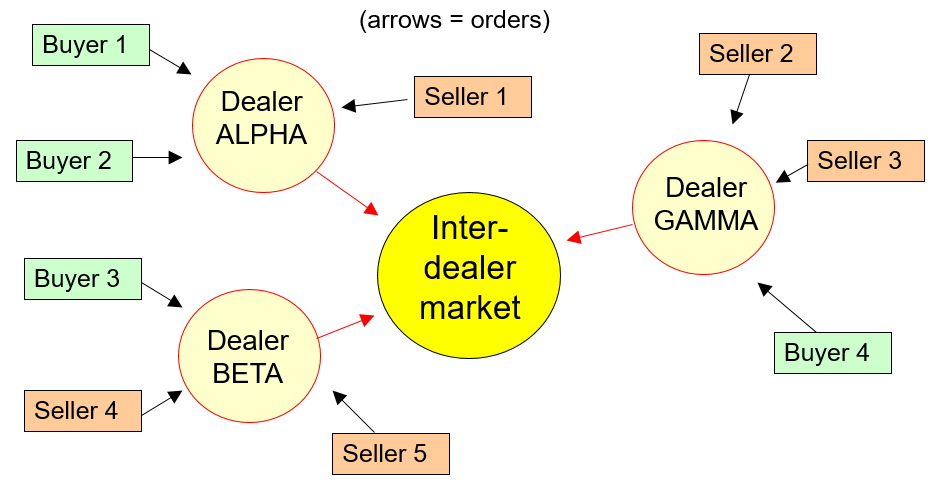
Dealer Market: Example
| Market Maker | Bid Price | Offer Price | Quote Size | Time |
|---|---|---|---|---|
| ALPHA | 326 | 330 | 75 × 75 | 8:53 |
| BETA | 324 | 330 | 75 × 75 | 9:14 |
| GAMMA | 325 | 329 | 75 × 75 | 9:16 |
| DELTA | 323 | 332 | 75 × 75 | 8:53 |
| EPSILON | 325 | 329 | 25 × 25 | 9:36 |
| ZETA | 326 | 330 | 75 × 75 | 11:30 |
| ETA | 325 | 330 | 75 × 75 | 9:45 |
| THETA | 325 | 330 | 75 × 75 | 9:23 |
| IOTA | 324 | 329 | 75 × 75 | 10:27 |
| KAPPA | 323 | 330 | 75 × 75 | 9:45 |
| LAMBDA | 325 | 330 | 75 × 75 | 8:53 |
- Seller 4 wants to sell 60 shares.
- Contacts Dealer Beta, who quotes Bid = $324, Ask = $330.
- Seller 4 can sell at $324 or try another dealer.
- Inventory Risk: Dealers face the risk of price drops after acquiring shares.
Dealer Market (cont’d)
Key Differences from Limit Order Markets
- No price priority enforcement → Searching for a better price is costly.
- Dealer markets allow bargaining over price and quantity.
- Some dealer markets display real-time quotes (e.g., Nasdaq).
- Corporate bond markets lack real-time data.
- Forex markets provide only indicative quotes.
Preferencing & Payment for Order Flow
- Preferencing: A broker commits to routing orders to a specific dealer.
- Payment for Order Flow: Dealers pay brokers to route trades to them.
- Can impact execution quality.
Market-Making Obligations
- Some markets (e.g., NYSE) require Designated Market Makers (DMMs).
- DMMs commit to providing liquidity by maintaining bid-ask prices up to a specific trade size.
Investment Companies
Investment Companies
Pool funds from individual investors to invest in diversified assets.
Types of Investment Companies:
- Unit Investment Trusts (UITs): Fixed portfolio, unmanaged.
- Managed Investment Companies:
- Open-end vs. Closed-end funds.
- Active vs. Passive management.
- Other Types:
- Hedge Funds: Lightly regulated, private investment pools.
- Real Estate Investment Trusts (REITs): Invest in real estate or mortgages
Services provided:
- Record keeping & administration
- Diversification: Reducing risk exposure.
- Professional management: Fund managers handle investments.
- Lower transaction costs: Economies of scale reduce expenses.
Investment Companies: Net Asset Value (NAV)
- NAV: The value of each share in the investment company
\[ \text{NAV} = \frac{\text{Market Value of Assets} - \text{Liabilities}}{\text{Shares Outstanding}} \]
Example
- A mutual fund manages a portfolio worth $120 million, with:
- Liabilities = $4M (advisory fees) + $1M (rent, wages, misc.).
- Shares Outstanding = 5 million.
\[ \text{NAV} = \frac{120 - 5}{5} = \$23 \text{ per share} \]
Open-End vs. Closed-End Funds
- Closed-end funds trade on exchanges like stocks.
- Open-end mutual funds are bought and redeemed directly from the fund at NAV, so shares outstanding change daily.
Mutual Funds: How to Invest?
Ways to Purchase Mutual Funds:
Direct-marketed funds: Buy directly from the fund.
Sales-force distributed:
- Sold through brokers or financial advisors.
- Revenue sharing creates potential conflicts of interest.
Financial supermarkets:
- Platforms offering multiple funds.
Fee Structure
- Operating Expenses – Management fees
- Front-end load – Upfront commission (e.g., 4%-5%)
- Back-end load – Exit fee, decreasing over time
- 12b-1 fees – Annual marketing & distribution charges
Fees must be disclosed in the fund prospectus.
Different share classes offer varying fee structures.
Example: Dreyfus High Yield Fund (2018)
- Front-end loads vs. 12b-1 charges:
- Class A: Front-end load, lower ongoing fees.
- Class C: No front-end load, but higher annual fees.
- Class I: Institutional investors only, lowest fees.
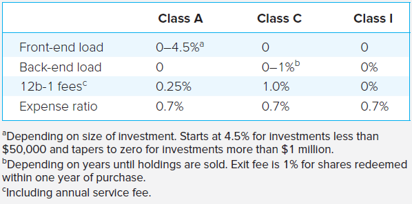
Impact of Costs on Investment Performance
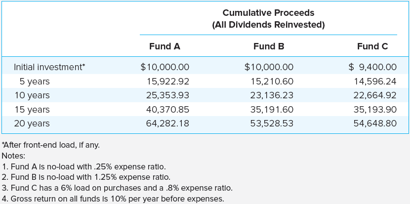
- Higher costs reduce net returns.
- Lower-fee funds outperform over time due to compounding effects.
Comparing Share Classes: Equity Fund Example*
Fee Structures
- Class A: 4% front-end load, no ongoing fees.
- Class B: No front-end load, but 0.5% 12b-1 fees and a declining back-end load:
- Starts at 5%, decreases 1% per year (until year 5).
- Fund Portfolio Return: 10% net of operating expenses.
Scenario: What Happens to a $10,000 Investment?
- [1 year]
- [4 years]
- [10 years]
Which share class provides higher net proceeds at different investment horizons?
Investment Companies: Market Size
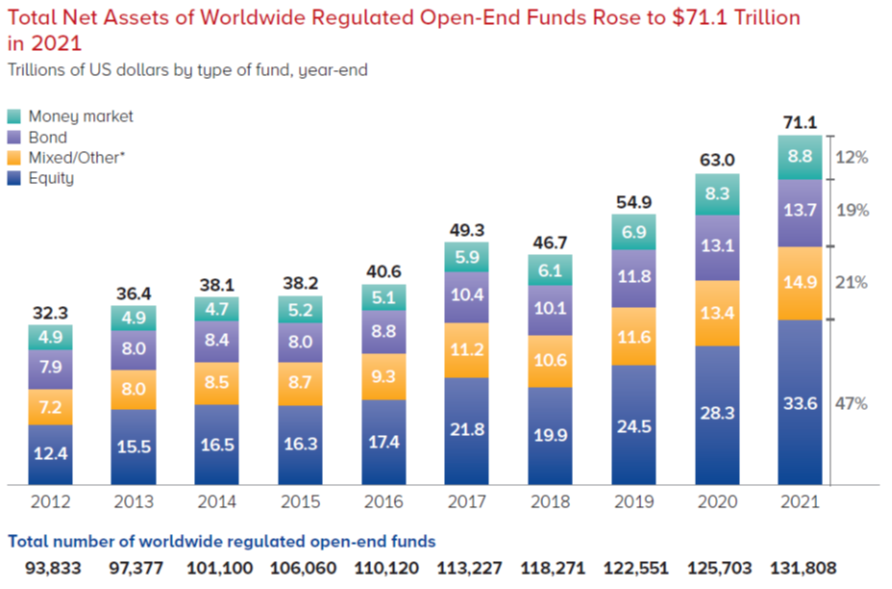
Investment Companies: By Region
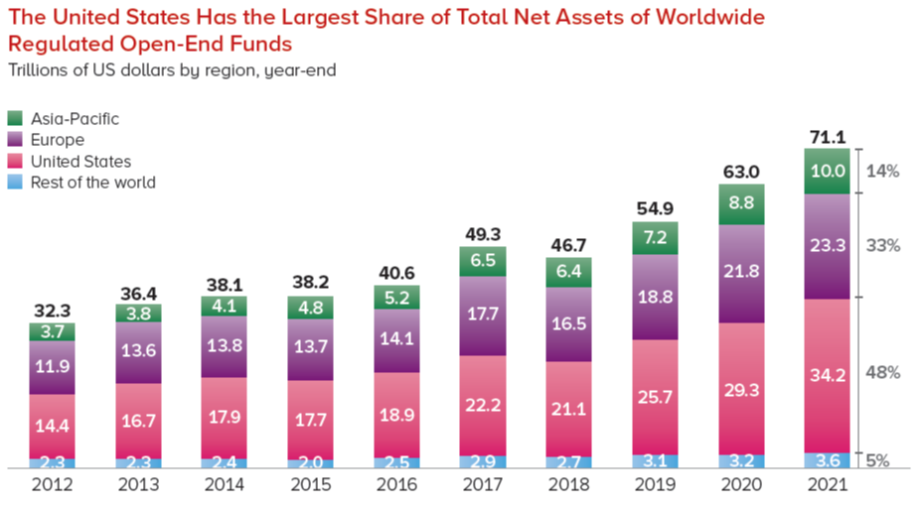
Investment Companies: Recent Development
Exchange-Traded Funds (ETFs):
Trade continuously like stocks.
Can be sold short or purchased on margin.
Generally lower costs than mutual funds.
Advantages of ETFs:
- More flexible than index funds.
- Lower expense ratios than actively managed mutual funds.
- Tax efficiency due to in-kind redemptions.
Disadvantages of ETFs:
- Prices may deviate from Net Asset Value (NAV).
- Must be purchased through a broker, incurring trading costs.
Actively Managed ETFs
Traditionally, ETFs were required to track specified indexes.
Recent expansion includes actively managed ETFs that follow different investment strategies:
- Value investing
- Growth stocks
- Dividend yield
- Liquidity factors
- Recent performance trends
- Volatility
Key Feature:
- Unlike traditional mutual funds, actively managed ETFs disclose their portfolio composition daily.
Non-Transparent Actively Managed ETFs
- Challenge: Frequent portfolio disclosure could allow competitors to exploit fund trading strategies.
- Solution: Development of non-transparent actively managed ETFs.
- Regulatory Approval:
- In 2014, the SEC granted permission to Eaton Vance to introduce an actively managed non-transparent ETF.
- NextShares began trading in 2016.
- Key Difference:
- Unlike traditional ETFs, these funds limit portfolio disclosure to protect trading strategies.
Investment Companies: ETF Trends

Source: Statistica - Global exchange-traded funds (ETFs) from 2003 to 2021
Investment Companies: Mutual Fund Performance
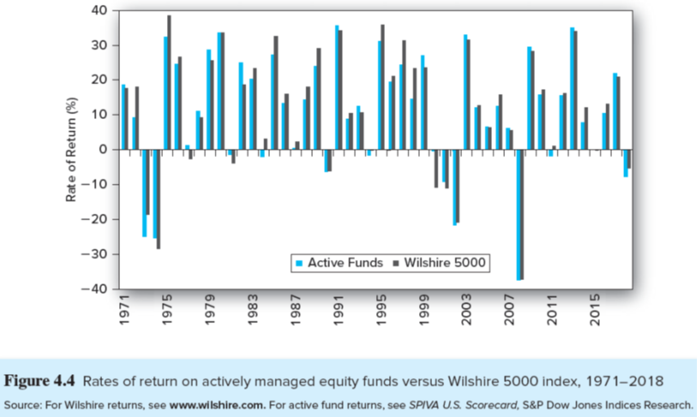
Investment Companies: Performance Persistence
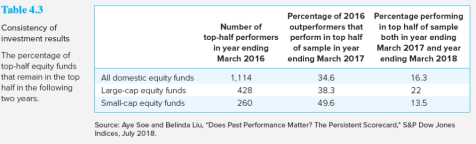
Investment Companies: Closed-end Funds
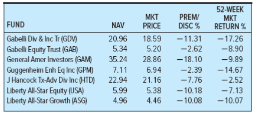
Closed-end Fund Puzzle
- The common divergence of price from net asset value, often by wide margins, is a puzzle that has yet to be fully explained
Investment Companies: Hedge Funds
- Hedge Funds:
- Typically structured as private partnerships.
- Subject to minimal regulation, unlike mutual funds.
- Can pursue complex investment strategies:
- Heavy use of derivatives.
- Short selling.
- Leverage to amplify returns.
- Not available to the general public; open only to wealthy or institutional investors.
- Lock-Up Periods:
- Many hedge funds require an initial “lock-up” period of several years.
- Investors cannot withdraw funds during this time.
- Allows hedge funds to invest in illiquid assets without facing immediate redemption pressure.